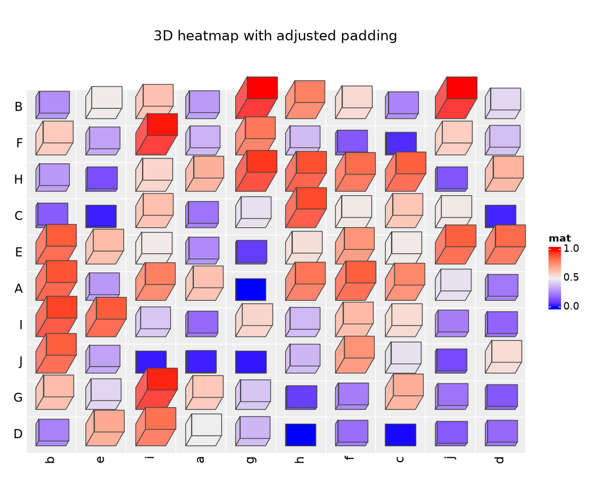
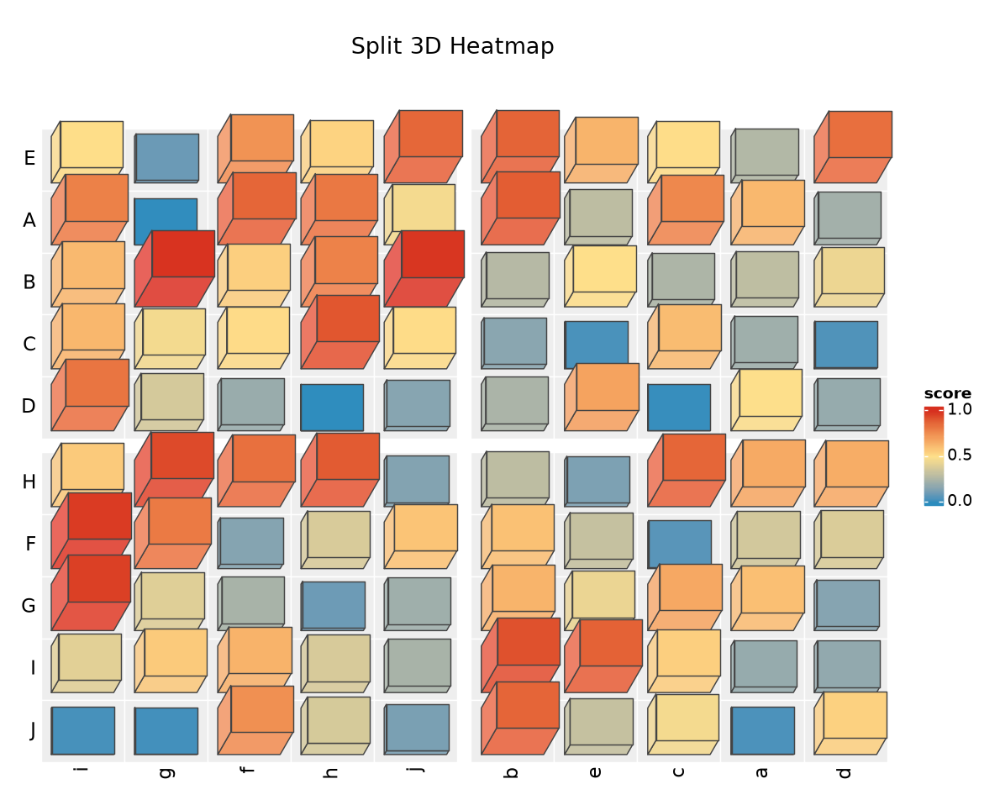
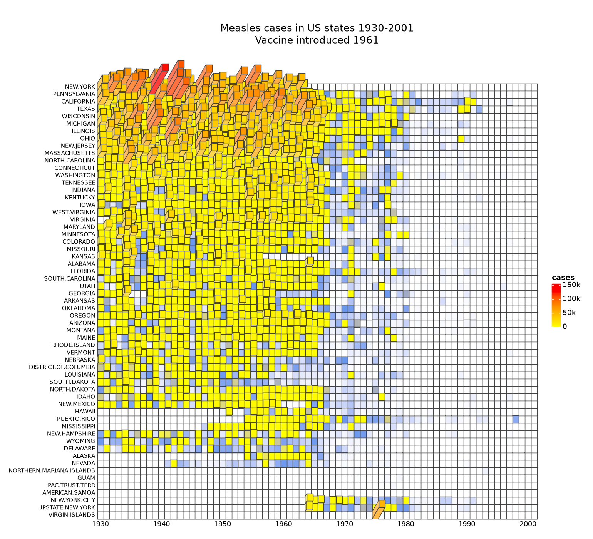

12 Three-dimensional ComplexHeatmap#
12.1 Motivation#
densityHeatmap() visualizes a list of distributions
using kernel density estimates mapped to colors:
import numpy as np
import pandas as pd
import complexheatmap as ch
rng = np.random.default_rng(123)
mat = pd.DataFrame(rng.normal(size=(50, 10)), columns=list("abcdefghij"))
ch.ht_opt.HEATMAP_LEGEND_PADDING = ch.unit(14, "mm")
ch.draw(ch.densityHeatmap(mat, title="Density heatmap"), padding=ch.unit([4, 18, 4, 4], "mm"))
frequencyHeatmap() provides a histogram-binned
counterpart, supporting "count", "proportion",
and "density" statistics:
ch.ht_opt(RESET=True)
ch.draw(ch.frequencyHeatmap(mat, title="Frequency heatmap (2D)"))
A 2D frequency heatmap does not immediately look like a 3D histogram.
Passing use_3d=True renders each bin as an isometric 3D bar
whose height is proportional to the cell value:
ch.ht_opt.TITLE_PADDING = ch.unit([10, 2], "mm")
ch.ht_opt.HEATMAP_LEGEND_PADDING = ch.unit(8, "mm")
fh3d = ch.frequencyHeatmap(
mat,
use_3d=True,
title="Frequency heatmap (use_3d=True)",
top_annotation=ch.HeatmapAnnotation(
_spacer=ch.anno_empty(border=False, height=ch.unit(6, "mm")),
show_annotation_name=False,
),
bar_max_length=ch.unit(8, "mm"),
)
ch.draw(fh3d, padding=ch.unit([4, 10, 6, 6], "mm"))
12.2 Implementation of 3D heatmap#
3D heatmaps are built on the bar3D() primitive, which
draws an isometric rectangular prism onto the active grid viewport:
ch.grid_newpage(width_in=3.5, height_in=3.0)
ch.bar3D(x=0.5, y=0.5, w=0.2, h=0.2, l=ch.unit(1, "cm"), theta=60)
The geometric parameters of bar3D() are illustrated
below:
x,y: Center coordinates of the bottom face (defaults to"npc"if numeric).w,h: Width (x-axis) and height (y-axis) of the bottom face.l: Projected length of the bar along the z-axis.theta: Projection angle in degrees, constrained to[0, 90].

To enhance depth perception, bar3D() automatically
computes three distinct face brightness levels using
add_luminance() in HCL color space:
ch.grid_newpage(width_in=6.0, height_in=2.2)
ch.bar3D(
x=np.linspace(0.2, 0.8, 4),
y=0.35,
w=ch.unit(6, "mm"),
h=ch.unit(6, "mm"),
l=ch.unit(1.1, "cm"),
fill=["red", "green", "blue", "purple"],
)
In ComplexHeatmap-py, bar3D() accepts a
scalar theta angle per call (between 0 and
90). Drawing across multiple angles simply iterates over
(x, theta) pairs:
ch.grid_newpage(width_in=6.4, height_in=2.4)
for x_pos, th in zip(np.linspace(0.18, 0.78, 4), [20.0, 40.0, 60.0, 80.0]):
ch.bar3D(x=float(x_pos), y=0.32, w=ch.unit(6, "mm"), h=ch.unit(6, "mm"), l=ch.unit(1.1, "cm"), theta=th, fill="#4DAF4A")
ch.grid_text(f"theta={int(th)}°", x=float(x_pos), y=0.14, just="top", gp=ch.gpar(fontsize=9.5))
Heatmap3D() wraps Heatmap() with a
vectorized layer_fun that draws bar3D() bars
back-to-front across each heatmap slice. The input matrix must be
non-negative, row names default to "left", and dendrograms
are hidden by default (show_row_dend=False,
show_column_dend=False) while clustering still runs:
mat3d = pd.DataFrame(
np.random.default_rng(7).uniform(0.0, 1.0, size=(10, 10)),
index=list("ABCDEFGHIJ"),
columns=list("abcdefghij"),
)
ch.draw(ch.Heatmap3D(mat3d, name="mat", column_title="This is a 3D heatmap"))
Because 3D bars project upward and to the right, tall bars near the
top or right edges can overlap the column title or legend. You can
prevent overlap by adjusting ht_opt.HEATMAP_LEGEND_PADDING
and ht_opt.TITLE_PADDING, and optionally inserting a
transparent _spacer top annotation
(anno_empty(border=False)) to reserve extra overhead
clearance:
ch.ht_opt.HEATMAP_LEGEND_PADDING = ch.unit(8, "mm")
ch.ht_opt.TITLE_PADDING = ch.unit([10, 2], "mm")
ht_pad = ch.Heatmap3D(
mat3d,
name="mat",
column_title="3D heatmap with adjusted padding",
top_annotation=ch.HeatmapAnnotation(
_spacer=ch.anno_empty(border=False, height=ch.unit(7, "mm")),
show_annotation_name=False,
),
bar_max_length=ch.unit(8, "mm"),
)
ch.draw(ht_pad, padding=ch.unit([4, 4, 6, 6], "mm"))
ch.ht_opt(RESET=True)
Heatmap3D() supports standard Heatmap()
features such as row_split, column_split,
bar_rel_width, bar_rel_height, and
bar_max_length:
ch.ht_opt.HEATMAP_LEGEND_PADDING = ch.unit(8, "mm")
ch.ht_opt.TITLE_PADDING = ch.unit([8, 2], "mm")
ht_split = ch.Heatmap3D(
mat3d,
name="score",
col=ch.colorRamp2([0, 0.5, 1], ["#2B8CBE", "#FEE08B", "#D7301F"]),
row_split=["Group 1"] * 5 + ["Group 2"] * 5,
column_split=["Cond A"] * 5 + ["Cond B"] * 5,
bar_rel_width=0.75,
bar_rel_height=0.75,
bar_max_length=ch.unit(7.5, "mm"),
top_annotation=ch.HeatmapAnnotation(
_spacer=ch.anno_empty(border=False, height=ch.unit(6, "mm")),
show_annotation_name=False,
),
row_gap=ch.unit(3, "mm"),
column_gap=ch.unit(3, "mm"),
)
ch.draw(ht_split, column_title="Split 3D Heatmap", padding=ch.unit([4, 4, 6, 6], "mm"))
ch.ht_opt(RESET=True)
Finally, we apply Heatmap3D() to the bundled
measles dataset (compare with the 2D version in Section
14.2):
mat = ch.load_dataset("measles")
year_text = [str(c) if int(c) % 10 == 0 else "" for c in mat.columns]
ha_column = ch.HeatmapAnnotation(
year=ch.anno_text(year_text, rot=0, location=ch.unit(1, "npc"), just="top", gp=ch.gpar(fontsize=9)),
show_annotation_name=False,
)
col_fun = ch.colorRamp2([0, 800, 1000, 127000], ["white", "cornflowerblue", "yellow", "red"])
with ch.ht_opt.local(TITLE_PADDING=ch.unit([14, 2], "mm"), HEATMAP_LEGEND_PADDING=ch.unit(7, "mm")):
ht_measles = ch.Heatmap3D(
mat,
name="cases",
col=col_fun,
cluster_columns=False,
show_row_dend=False,
show_column_names=False,
row_names_side="left",
row_names_gp=ch.gpar(fontsize=7.5),
column_title="Measles cases in US states 1930-2001\nVaccine introduced 1961",
top_annotation=ch.HeatmapAnnotation(
_spacer=ch.anno_empty(border=False, height=ch.unit(8, "mm")),
show_annotation_name=False,
),
bottom_annotation=ha_column,
heatmap_legend_param={"at": [0, 5e4, 1e5, 1.5e5], "labels": ["0", "50k", "100k", "150k"]},
bar_rel_width=1.0,
bar_rel_height=1.0,
bar_max_length=ch.unit(1.5, "cm"),
)
ch.draw(ht_measles, width=11.0, height=10.0, padding=ch.unit([4, 4, 6, 6], "mm"))
While 3D bar heatmaps are visually striking, 2D heatmaps usually
communicate dense quantitative matrices more accurately and render much
faster on large datasets; reserve Heatmap3D() for compact
matrices where highlighting extreme peaks is beneficial.